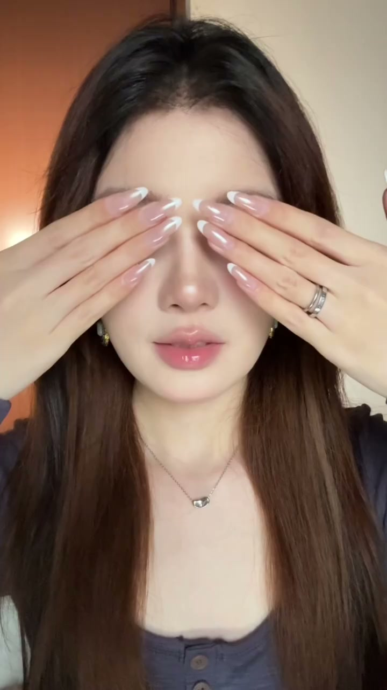
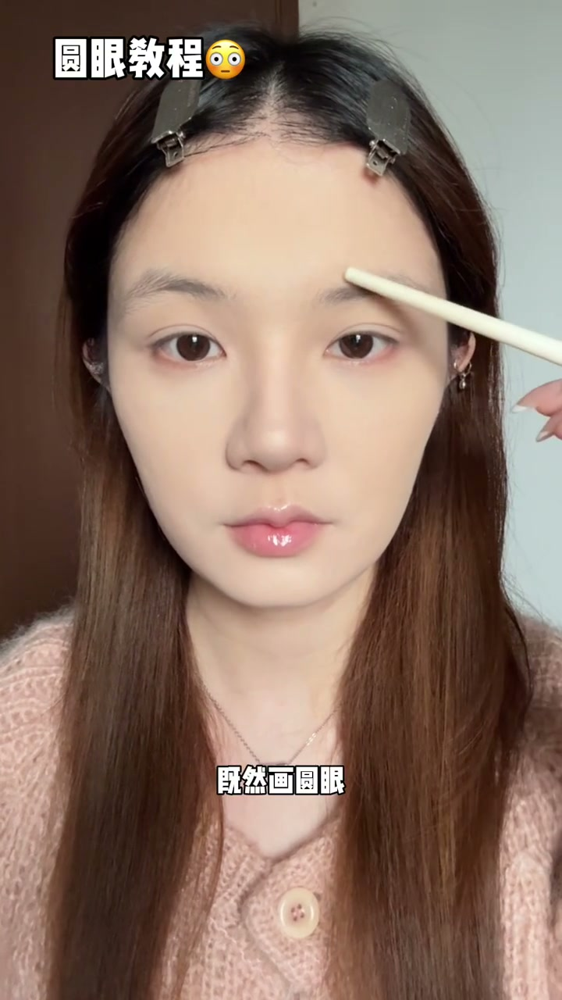
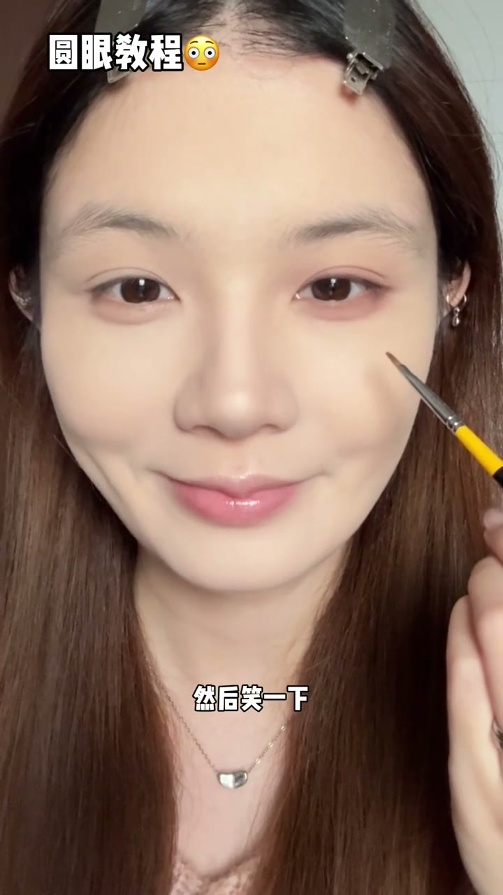
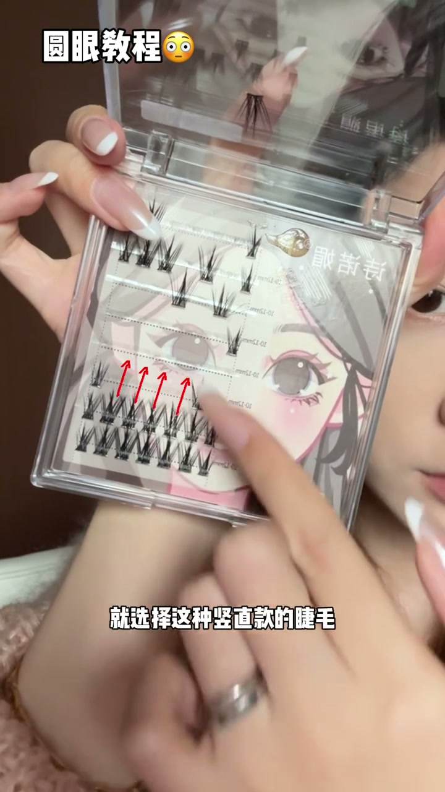
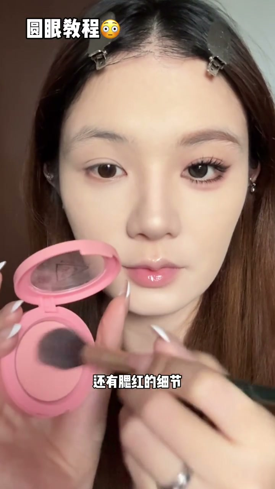
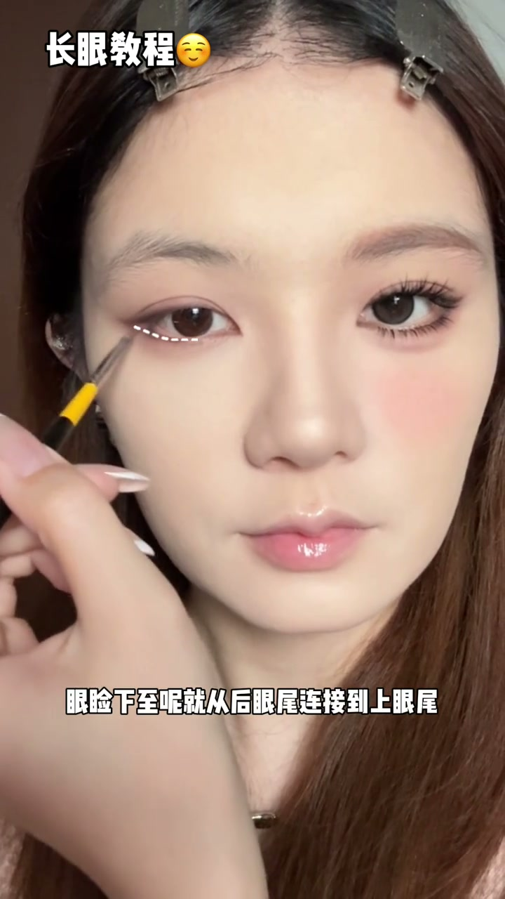
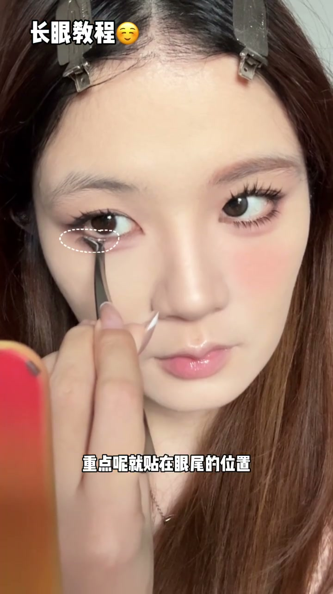
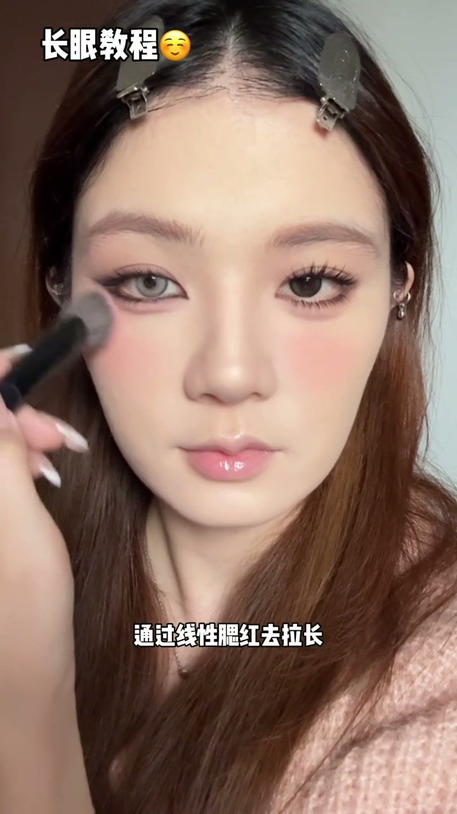

01
中文
画眼妆可以注重三条线：眉毛、上眼形和卧蚕。
EN
Eye makeup follows three lines: brows, upper lid, and aegyo-sal.
表达提示three lines（三条线）

Scene English · 美妆 · 眼妆教程
Long Eyes vs Round Eyes — Master Both Eye Makeup Looks
🎧 语音讲解
Opening: today I teach both round-eye and …
情境圆眼与长眼的三条线对比。
画眼妆可以注重三条线：眉毛、上眼形和卧蚕。
Eye makeup follows three lines: brows, upper lid, and aegyo-sal.
表达提示three lines（三条线）
既然画圆眼，那三条线的形状也要偏圆弧状的。
For round eyes, all three lines should curve.
表达提示rounded lines（圆弧线条）
用长眼画圆眼、圆眼画长眼，更有对比效果。
Drawing the long eye round and the round eye long gives better contrast.
表达提示better contrast（更有对比）
three lines（三条线
rounded lines（圆弧线条

Round-eye base: start with a light shade a…
情境半圆打底+半圆晕染塑造圆眼。
先用浅色以一个半圆给眼皮打底，包括下眼睑。
Start with a light half-circle base on the lid, including the lower lid.
表达提示half-circle base（半圆打底）
再用灰色系的颜色从睫毛根部画起，以小半圆画在双眼皮上方。
Then a gray tone from the lash root as a small half-circle above the crease.
表达提示small half-circle（小半圆）
从眼尾和眉尾连一条线，晕染在下眼尾，让眼尾更显圆。
Connect the outer corner to the brow tail and blend down to round the eye.
表达提示round the outer corner（眼尾更圆）
half-circle base（半圆打底
small half-circle（小半圆

Aegyo-sal and corners: deepen the lash roo…
情境卧蚕半圆+眼头眼尾加深。
用深色加深睫毛根部，让上眼形更外扩。
Deepen the lash root to widen the upper eye shape.
表达提示widen the upper eye（上眼形外扩）
笑一下找到卧蚕中间，以它为最低点分别向前后晕染成半圆状。
Smile to find the aegyo-sal center and blend a half-circle forward and back.
表达提示aegyo-sal center（卧蚕中间）
用淡色只提亮在卧蚕的正中间。
Brighten only the aegyo-sal center with a light shade.
表达提示brighten the center（提亮中间）
aegyo-sal center（卧蚕中间
brighten the center（提亮中间

Lashes and liner: curl and prime the lashe…
情境竖直睫毛+短翘眼线圆眼。
填内眼线只填在眼中间这一段，让眼珠更圆更有神。
Fill only the center segment of the inner line for a rounder, livelier iris.
表达提示center segment（眼中段）
贴竖直款的睫毛，贴完纵向拉长眼型。
Use vertical-tuft lashes that stretch the eye shape upward.
表达提示vertical lashes（竖直睫毛）
下睫毛离睫毛根部往下贴一点，会有下拉眼睑的效果。
Place lower lashes slightly lower to pull the lid down and round the eye.
表达提示pull the lid down（下拉眼睑）
center segment（眼中段
vertical lashes（竖直睫毛

Brows and blush: choose contacts with a pu…
情境圆眉+团状腮红统一圆感。
眉毛需要一个偏圆偏柔感的形状，眉中间最高两端微微下落。
Brows should be soft and rounded—highest in the middle, falling at the ends.
表达提示rounded brows（圆眉）
腮红尽量画成团状的，让眼周看起来圆乎乎的。
Draw blush in rounded blobs to keep the eye area round.
表达提示rounded blush（团状腮红）
更强调妆容显嫩显灵动的属性。
It emphasizes a fresh, lively makeup vibe.
表达提示fresh and lively（显嫩灵动）
rounded brows（圆眉
rounded blush（团状腮红

Long-eye base: for long eyes all three lin…
情境平行四边形+横向拉长眼型。
长眼的话，这三条线就要更偏直、更偏长一些。
For long eyes, all three lines go straighter and longer.
表达提示straighter and longer（更直更长）
先用浅色以一个平行四边形打底。
Start with a light parallelogram base.
表达提示parallelogram（平行四边形）
用深色从眼尾平拉，拉到和眉尾差不多的长度。
Pull a deep shade from the corner to about the brow-tail length.
表达提示pull to brow tail（拉到眉尾）
parallelogram（平行四边形
pull to brow tail（拉到眉尾

Long-eye aegyo-sal and depth: connect the …
情境平直卧蚕+眼尾上扬拉长。
上下眼尾可以留出一点空隙，眼中更有透气感。
Leave a small gap at the outer eye for breathability.
表达提示breathable gap（透气空隙）
先平直着往前加深卧蚕，到眼尾就拐上去。
Deepen the aegyo-sal forward flat, then turn up at the corner.
表达提示turn up at the corner（眼尾拐上）
用淡色只提亮卧蚕的前半段。
Brighten only the front half of the aegyo-sal.
表达提示front half（前半段）
breathable gap（透气空隙
front half（前半段

Long-eye lashes and finish: curl and prime…
情境斜飞睫毛+锐利眉+斜扫腮红。
下睫毛贴斜飞款，重点贴在眼尾的位置。
Use swept-back lower lashes, focused at the outer corner.
表达提示swept-back lashes（斜飞睫毛）
眼睛剧用浅色系，减少黑色眼珠的存在感。
Use light contacts to downplay the dark iris.
表达提示light contacts（浅色美瞳）
通过线性腮红去拉长，让眼尾有一个往后延伸的视觉效果。
Sweep linear blush to stretch the outer corner backward.
表达提示linear blush（线性腮红）
swept-back lashes（斜飞睫毛
light contacts（浅色美瞳

Highlight differences and summary: corner …
情境C字提亮vs锐角提亮。
圆眼提亮更重C字提亮，去缩短中庭的比例。
Round eyes favor a C-shape highlight to shorten the mid-face.
表达提示C-shape highlight（C字提亮）
长眼更倾向于锐角提亮，让眼睛前后更有延长感。
Long eyes favor a sharp-corner highlight for front-back extension.
表达提示sharp-corner highlight（锐角提亮）
圆眼更活力可爱，长眼更清冷显贵气。
Round eyes are lively and cute; long eyes are cooler and chic.
表达提示lively vs chic（活力vs贵气）
C-shape highlight（C字提亮
lively vs chic（活力vs贵气
说圆眼三线
说圆眼卧蚕
说长眼打底
说长眼卧蚕
说提亮区别
圆眼三条线都要圆弧状。
圆眼只填内眼线中段。
长眼线条要偏直偏长。
长眼上下眼尾留空隙更透气。
圆眼C字提亮，长眼锐角提亮。